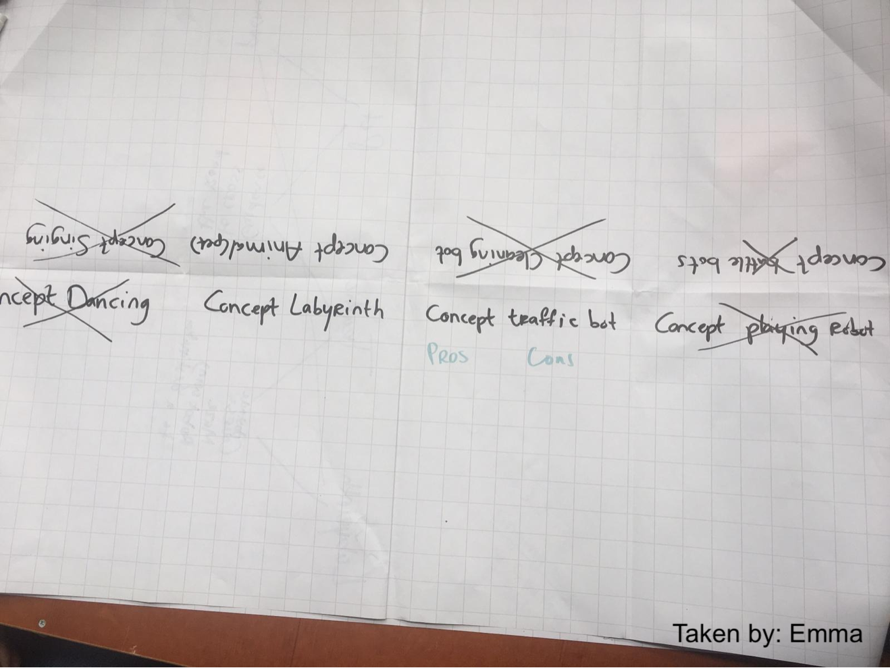
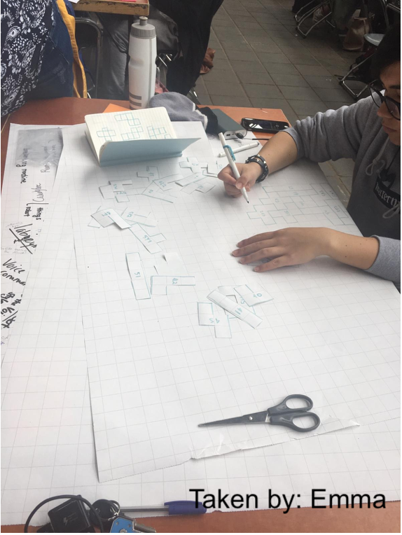

The day started with an introduction speech by Chris where he talked to us about how this class is going to run every day as well as mentioning the general rules for the lab weeks. We continued by getting to know our topic and the groups we have been assigned to. Once we were at the tables, we introduced each other to the rest of the group and came up with a name for our group. All artificial creatures people gathered in one corner and listened to Chris’ Artificial Creatures introduction. Afterwards, we prepared a KANBAN board to track our tasks we will be working on and stuck it to the wall. After we were done with the KANBAN board, we sat down and started the ideation for a concept. We started very broadly by creating a mind map of the term Artificial creatures. This was done simply so we could see everything that was out there and understand, what each group member understands as artificial creatures.
As the time went by, we were adding more and more ideas and notes into those empty spaces, but still found it very difficult to proceed and come up with something good. Therefore we just grabbed one of the Google Voice Kits, opened it and decided to just try something out and forget about the brainstorming. This “thinking about something else” seemed to help. What helped as well was talking to Gerome and the teachers. The creative juices started flowing and our mind-map grew. In the end, there were 8 concepts that stood out to us. During a discussion, we narrowed it down to 3 concepts with the idea of merging these into 1.
Once we knew how to merge these, we needed a kit. We knew the robot would need to move around, therefore we took one of the 4-wheel constructions and started building it.
As nobody was having their Arduino on hand, we decided to do the electronics part on Tuesday. However, we prepared everything necessary for it to run tomorrow. While one half of the group was building the wheels, the second part of the group started thinking of the maze building blocks. We knew we wanted the user to build her/his own maze and we would let the machine drive through it. The objective would be to build the hardest maze and confuse the robot as much as possible. Drew sketched these “tetris-like” blocks on paper, so that we could try out different variants of paths and see what building blocks work and which don’t and all in all, we needed to see how we could put these together to create a maze. This didn’t need to be adjusted to the size of the wheels yet.
After we were done with all the cutting and building, Chris brought us another set of wheels he though might fit our concept better, so we started to build those. We wrapped up the day by updating the KANBAN board, cleaning up and preparing our tables for day 2.
Today was dedicated to exploring the options to the different elements of the concept. I chose
to focus on the maze. I went online and researched different ways how to DYI a maze. I wanted
to create our first paper prototype as well as see what’s out there.
Lynette was also doing some research on mazes and created a mindmap from what she found out. Afterwards,
we all gathered around the mindmap and gave some more input.
While doing this, we came up with the idea to flip the concept and make the maze an artificial creature. We started to explore the complexity and feasibility of this by talking to the lecturers. Since we needed to do this decision of a concept-change altogether, we decided to take a vote. In the end, we decided to stick to the electronics of the old concept but with a different interactivity of the maze - instead of the user building it, we would make it a game where the user has to turn the walls of the maze and prevent the car-creature to get from start to the destination. Until the end of the day, Emma and Leon were working on connecting the Arduino to the wheels and making it ride and Drew and me were each prototyping a different version of a maze - Drew with sliders and I did one with one stable axis and the walls rotating around it. Towards the end of the workday, we presented the concept and what we have built so far to our classmates.
Today has started with a guest lecture about robots. The lecturer spoke about many projects and history
of robots in movies as well as human perception of robots. Towards the end, we receiver some tips on
how to make the artificial creature (robot) as believable as possible.
At around 11, everyone continued working on their stuff. I wanted to finish the prototype and to do that,
I needed a hot glue gun. So I went to THUAS to get it. I came back in an hour. By the time I was back we
knew how big the alleys in the maze should be, so I sketched the grid on a piece of cardboard and started
creating walls. We also ideated on the theme of the maze - Space/Cyberpunk. I was just cutting cardboard
and prototyping. After I was done with the prototype we acknowledged that the alleys can be a little bit
smaller and the car would still fit through.
First thing in the morning, we had a daily stand-up and wrote a promise on a piece of paper and hung it over our KANBAN board. The promise we came up with was "We promise to a-maze you."
After that we had a lecture about robotic creatures by a researcher from TU Delft.
After the lecture, we went back to work. Since we already knew how big the maze corridors should be,
we decided to prepare a bigger prototype (1:2 ratio) to be able to try out the user interaction with
the maze. In addition, we increased the size of the prototype to 160x160 (an 8x8 grid). I started
preparing the cardboard base and this took me ages as the cardboard had plenty of holes that needed to
be filled.
After I was done with it, I helped Drew to come up with the layout for the maze. We basically used
desktop walkthrough for this. By the end of the day, we knew where to place the interactive turning
walls and how to get to the destination. While doing this, we realised we need to twist the goal of
the game from playing against the Zumo to helping Zumo get to the destination as soon as possible as
we saw many opportunities for the player to just trap Zumo inside the maze. Since Drew has been drawing
maze structures for the past 3 days, he already had a set of rules he gained from his experience of
making a good maze (the picture on the right).
The last thing we did today was testing the Zumo in the prototype we did yesterday (adjusted to
the 20 cm corridors instead of 25cm) by letting it run around, making turns and detecting obstacles.
We did 4 test rounds and adjusted the settings after each round. we needed Zumo to rotate without going
so much to the back as well as we needed it to “look around” by looking left as well as right to make
it appear more natural.
Today we started off with a guest lecture on playfulness and playful interfaces. After the lecture
we decided to start with building our final product. We discovered the proximity sensors had problems
with the cardboard as the main material when the car didn’t drive parallel to it. The sound waves were
not dampened enough and therefore inaccurate. We needed to find a material, or better said structure
which would isolate the sound waves and help with the navigation. The whole morning we were trying out
different materials with different textures. We performed a car drive test in the big prototype with
walls with different textures. We tried different kind of mesh, paper, cardboard with an uneven surface,
books, we even tried to make a pattern on a piece of cardboard with a hot glue gun. We found out that
the cardboard with a wrinkly surface works, so we decided to order it. Another important finding we
found during our test was that even the slightest surface difference can make Zumo stuck. For the rest of
the day, we were working on the base part of the maze. We created it out of multiple boxes and then we
cover the holes with cardboard cutouts to make it as even as possible.
We were also advised to reformulate our promise, so the new version ended up being "We promise to put your reactions and thinking to the test and the strangest teammate you've ever had.".
Today started off with a standup. After standup, my group created a list of items we needed to
start working for the final maze and I went to buy everything. After I came home, I was helping
Drew finish up the 2nd base layer we wanted to use to strengthen the existing one and gave feedback
on the logo Emma was creating. After that, we had a group meeting since we had some communication
issues in the group. After the group meeting, we painted the base layer with acrylic paint and sand
to give it an asphalt look. I also created the list of requirements for the expo space on Friday.
Today’s product:
Today started up with a standup. After standup, Drew and me went to Gamma to buy spray-paint and check out some alternatives for the ridged cardboard we ordered as we did t have any delivery information. After we came back from Gamma, we were discussing strategy while waiting for the cardboard which was supposed to arrive till 14:30. Drew was designing a poster for our station. After the cardboard arrived, we split roles - Leon and me were cutting out pieces we needed for the maze, Lynette was sticking them together, Emma and Drew were spray painting it.
At the beginning of the day, Leon and me finished cutting out all the cardboard pieces of the maze. After that I have been shopping for supplies and had to go back 3 times because we always ran out of something or needed something new. For the rest of the day, I was helping out with the maze assembly as well as with spray-painting ofsome of the pieces. The maze layout was finished towards the end of the day - the base was finished, it was on it's place, all walls were up. We didn't manage to decorate today.
EXPO DAAAAY!!! Frankly, we forgot to do stand up as everyone was so excited to finish everything in time.
We still had some painting to do as well as decorating. During the test we have made with Lemon in the early
morning, we also had to make the edges of the simple walls bigger, so they would be detected easily by the
proximity sensors. We had this transparent pipe we used. It was a little bend therefore I dipped it in hot
water and tried to straighten it, so that we wouldn’t need that much hot glue. We ran out of glue, needed
some more glow-sticks print out the logo for the maze walls and a hair-drier, so I went shopping to
megastores, printing to the uni and stopped by at home to get the hair drier. After I came back, we finished
glueing all the pipes and started the decorating. Another thing we found out during the test in the morning
was that we should take the metal part of the Zumo, so that it wouldn’t crash into walls and get stuck so
much, so Emma took care of that while we were decorating and decorating. Drew worked on the
paddles/navigation walls for the players. We finished everything at around 14:30 and then spread around
and started helping other groups that needed it.
The expo went so well! I stood at the maze for most of the time together with Drew, Emma and Leon.
People loved the maze and were so into it that they broke off some of the movable parts. However,
we had a glue gun ready and were able to fix everything pretty fast. The good thing was that the people
were still able to play even if we were fixing a part of it and it didn’t affect them much. Zumo stayed
functional throughout the whole expo - we only needed to change his batteries once at around 7:30.
Although I have seen a lot of flaws in our design, people seemed to love the idea as well as the execution,
what made me very happy.
We left at around 20:40, exhausted but happy.
For more pictures and videos, please watch the video in LabWeeks -> Product.